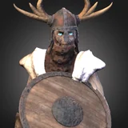
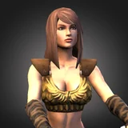
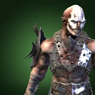
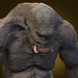
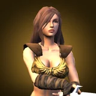
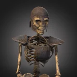
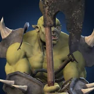
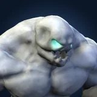
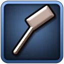
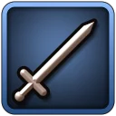

Item
Sweeping Warblade
Rare offensive item. The holder: +50 attack damage. When the holder lands an attack, it deals 40 physical damage to the unit it hit and all enemies within 1 cell of it.
Melee only. +50 attack damage. Attacks deal 40 extra physical damage to the target and enemies within 1 cell of it.
That is the wording on the item's card. The sections below are worked out from the item itself and say what happens in play.
As a rare item (tier 3) it is offered on rounds 16 and 20. See Loot and items for how offers work.
What it does
The holder: +50 attack damage.
When the holder lands an attack, it deals 40 physical damage to the unit it hit and all enemies within 1 cell of it.
Only a melee unit (attack range 1) can hold it.
A triggered effect needs its holder in the fight: nothing fires from the bench, and nothing fires after the holder has died. Triggers and targeting explains how triggers pick their targets.
Who can carry it
Melee and ranged are judged by the unit's own attack range at one star: 1 cell or less is melee, anything longer is ranged. Range gained from items or effects does not change that. 35 units from the shop can hold it and 30 cannot. A unit holds one item at a time.
Units that can hold it (35)
 Gutter Scavenger
Gutter Scavenger Drowned Pikeman
Drowned Pikeman
Ashen Pilgrim Thornback Boar
Thornback Boar
Oath Cutter Hive Skulker
Hive Skulker Chainwarden
Chainwarden
Cog Sapper Saw Rigger
Saw Rigger Riftlance Duelist
Riftlance Duelist Hellblade Reaver
Hellblade Reaver Oathkeeper Thane
Oathkeeper Thane Gate Duelist
Gate Duelist Quillback
Quillback Banner Squire
Banner Squire Ashen Abbess
Ashen Abbess Pack Warden
Pack Warden Moonless Alpha
Moonless Alpha Tidal Stalker
Tidal Stalker Ashwalker
Ashwalker Cinder Hatchmother
Cinder Hatchmother Gnawing Wight
Gnawing Wight Ember Duelist
Ember Duelist Pit Marshal
Pit Marshal Drowned Behemoth
Drowned Behemoth Duskguard
Duskguard Hollow Strider
Hollow Strider Rootwarden
Rootwarden Grey Confessor
Grey Confessor
Spire Colossus Hourblade
Hourblade Cinder Wyrmrider
Cinder Wyrmrider
Blood Matriarch Duskmother
Duskmother Spire Exemplar
Spire ExemplarUnits that cannot hold it (30)
 Spire Acolyte
Spire Acolyte Bog Hexer
Bog Hexer
Grave Archer Pit Imp
Pit Imp Rift Mote
Rift Mote Gargoyle Gunner
Gargoyle Gunner Thornwood Seer
Thornwood Seer Mire Skirmisher
Mire Skirmisher Marsh Hag
Marsh Hag Night Sentinel
Night Sentinel Drowned Wailer
Drowned Wailer Thorn Caller
Thorn Caller Jade Drakeling
Jade Drakeling Hollow Singer
Hollow Singer Soul Reaper
Soul Reaper Fen Mystic
Fen Mystic
Spire Marksman
Clockwork Savant Briar Shaper
Briar Shaper Storm Augur
Storm Augur Bearclaw Wilder
Bearclaw Wilder Plague Cantor
Plague Cantor Veiled Seer
Veiled Seer Blastcap Sapper
Blastcap Sapper Skyfall Archer
Skyfall Archer Brood Queen
Brood Queen Mire King
Mire King Deep Basilisk
Deep Basilisk Abyssal Archon
Abyssal Archon Soul Tyrant
Soul TyrantEquipping it from your inventory sends the unit's current item back to the inventory. Dragging it from one unit to another swaps the two items; the swap is refused if either item would end up on a unit that cannot hold it. See Loot and items.
Among the commanders, Brugg Ironjaw can hold it; Vey the Pactbinder, Pip Quickfingers and Fizzwick Emberhorn cannot.
An item does nothing while its holder sits on the bench. Selling the holder returns the item to your inventory.
There is no limit on copies, though an offer shows items you do not own yet before it repeats one.
Other tier 3 offensive items
 Thunderchain Baton
Thunderchain Baton Frenzy Visage
Frenzy Visage
Skullcrack Maul Executioner's Glaive
Executioner's Glaive
Fencer's FoilSee also
- Loot and items: loot rounds, offers, the inventory and equipping.
- Items: every item by tier and kind.
- Item table: every item's bonuses side by side.